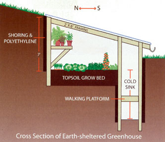
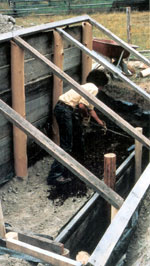
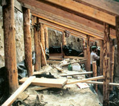
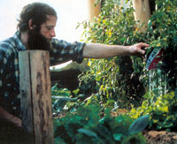

Ninety frost-free days here in the mountains of Idaho close to the Canadian border are not enough to raise most vegetable crops. For several years, I watched in frustration as my tomato and corn crops succumbed to frost in early September. Even the hardy Swiss chard and cabbage would call it quits in October. I asked my old-time neighbors what they were doing about the problem. "Plant root crops," they told me. "Potatoes and carrots. Put 'em in a root cellar and they'll keep all winter."
I tried that and it did work. I found other "keepers," too, like apples and squash, onions and garlic. The cook at my favorite restaurant astonished me by keeping cabbage fresh for months by pulling it up and hanging it upside down by the roots in her own root cellar. But these weren't fresh-picked foods. I wanted fresh, organic greens in seasons other than summer.
In past centuries in early spring, wise farmers would start their garden vegetables in 3-foot deep pits known as "growholes." These pits were filled with three layers of organic material: The lowest layer was a foot of fresh horse manure; the second, a foot of topsoil; and the third, a foot of growing space for the vegetables planted in the soil. The grow-pit was traditionally covered with old storm windows or other wood-framed glass. The glass trapped both the sun's heat and the heat rising from the decomposing horse manure. The soil around the pit acted as a passive heat-sink for the sun's energy, absorbing it during the day and releasing it at night.
I built a small grow-hole, and it did work. I got a jump on my traditional garden, increasing the growing season from three to four months. It was a good start, but some weaknesses inherent in this method were apparent. First, to water or weed the plants, I had to open the pit and expose them to the air. Most plants will not grow in temperatures lower than 40 degrees; so, on a 30-degree day I was destroying the cozy, sun-baked 50- or 60-degree environment, shocking the small starts. Second, having the glass lay flat on top of the pit bothered me. When the sun hit the glass at a low angle, such as we have in early spring, much of the radiant heat bounced off like a stone skipping over water.
It seemed logical and practical to raise the angle of the glass and to make the pit tall enough on the north side so I could work on the plants from the inside. I saved the soil from the excavation and mounded it on the north side for insulation. Finally, my plans had evolved from a humble growhole into a modest, earth-sheltered greenhouse.
Unfortunately, this design had weaknesses, too, so I went back to the drawing board. I wanted to dig the planting area inside the earth-sheltered greenhouse as deeply as possible to take advantage of the Earth's warmth: The ground maintains a steady, moderate year-round temperature 8 feet down, and I wanted to get as close to that as possible.
But the lower the growing bed was, the more shade the south earthen wall created a definite problem.
One solution was to create a path on the south side from which to work on the plants, but that side was where the glass was the lowest.
To work on the plants with any comfort, I had to utilize the area along the north wall, which was prime growing space. I was losing growing area on the south because of the shade and on the north because of the path. Hmm. Finally, I hit on a plan to dig a trench on the south side deep enough to walk in while working on the plants in the growing bed. That would eliminate the path on the north side and make use of the shaded area on the south. It would also eliminate working in a bent-over position. By designing the grow-bed so it was only 3 feet across, I could reach all the plants comfortably without having to kneel.
So, that was the greenhouse I built. I didn't realize at the time I'd stumbled across the "cold-sink" concept.
The cold-sink is the walkway trench on the south side of the growing bed. Now, instead of the coldest air in the greenhouse sinking and settling around the plants, it spills over and down into the trench, where the Earth warms it.
I heard of a Massachusetts man who built an earth-sheltered greenhouse similar to mine but without the cold-sink. To keep the cold air from settling on his plants, he installed a fan to keep the air moving. But a fan takes energy, can fail and does not warm the air. The cold-sink will never fail, allows the air around the plants to stay heated and uses absolutely free, passive energy.
I decided to glaze my greenhouse with fiberglass rather than regular glass. Fiberglass is more flexible with a snow load, and it was the most readily available material at the time. It is also easy to handle. This earth-sheltered greenhouse doubled my growing season and would have done much better had it not been in the shade of a hill, which blocked the sun November through February.
Rather than fight the shade, I built another greenhouse on the south slope of the hill, one so successful it has tripled the length of my growing season. I often harvest tomatoes into the second week of December, and sometimes hardy kale and cabbage through the winter. While those plants aren't growing during the cold, they are living and harvestable. And some of them will send up new shoots in late February, when springtime comes to the greenhouses' interiors. A diagram of the hillside structure is shown on Page 82.
The materials for these greenhouses are: upright posts that have had their buried ends wrapped in layers of plastic garbage bags; lumber shoring behind the posts; and a protective layer of 4- or 6-mil polyethylene sheeting between the lumber and earthen backfill.
Note that with this kind of construction, the posts will push in from the lateral pressure of the earth if care is not taken. Sinking the posts 18 to 24 inches deep will keep them from pushing in below ground level, and the roof beams or purlins supporting the glazing do the same for the top of the posts.
The beams and purlins transfer the pressure from one side of the structure to the opposing wall and its counterbalancing pressure. The supports holding up the walking deck in the cold-sink trench offer additional bracing for the two lower rows of posts.
For ventilation, I put screened air vents into the front of the greenhouse between the window and the soil, and in the back of the greenhouse just above the earth berm.
These greenhouses collect their own water for irrigation from the roof runoff. The water is transferred from gutters into black 55-gallon drums via garden hoses, which allows me to switch from one drum to another with ease. I siphon the water into 5-gallon pails for watering the plants. When filled with water, the dark painted drums also act as heat sinks, storing the sun's warmth during the day and releasing it at night.
Two improvements to my current design would be placing the drums in the trench beneath the grow shelf and using duo-pane glazing either fiberglass, which is expensive (and, in all likelihood, would be cloudy after 10 years or so) or used sliding patio doors, which are tempered not to shatter and can be found at salvage yards.
Should you build an earth-sheltered greenhouse? I heartily recommend it if you want fresh organic greens most of the year. It's also an incredible boon to those who have constant critter problems in their gardens. So, grab a shovel and start digging!
|
 DIANE A. RADER A friend spreads growing medium in Mike Oehler's original earth-sheltered greenhouse. |
 MIKE OEHLER Mike Oehler's second earth-sheltered greenhouse under construction. |
 MIKE OEHLER The author waters a vegetable crop in his sunniest earth-sheltered greenhouse in November. |
|
 MIKE OEHLER |
|
|